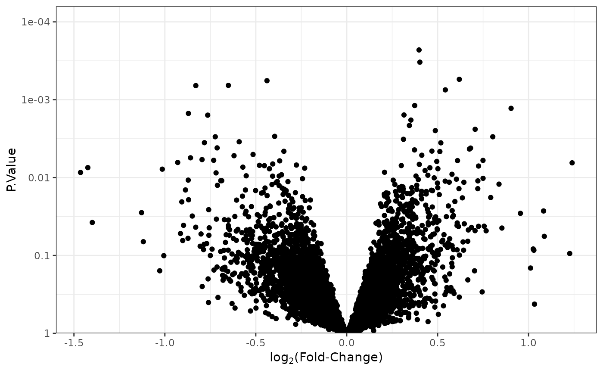
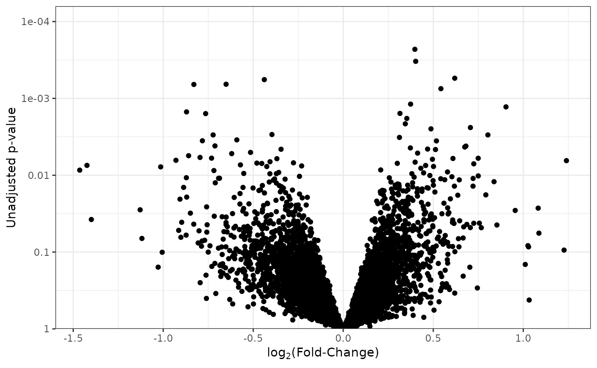
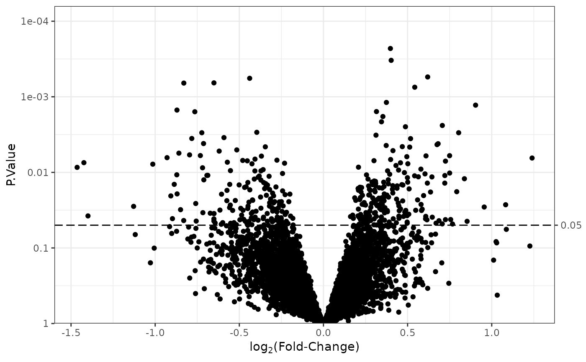
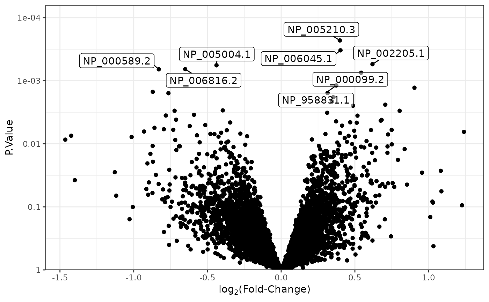
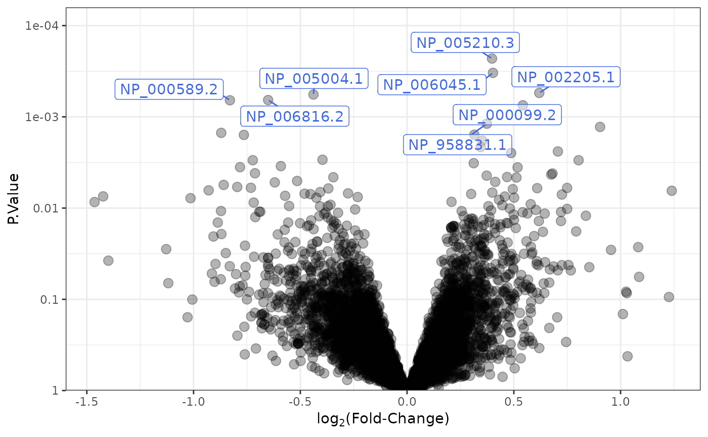

plot_volcano.RdA convenience function for creating a volcano plot.
data.frame or object that can be coerced to a
data.frame
character; the name of the column in df containing log2
fold-changes.
character; the name of the column in df containing
p-values (adjusted or not).
NULL (default) or numeric between 0 and 1; the
threshold indicating statistical significance. Creates a dashed horizontal
line at that value. Any points above this line in the graph are
statistically significant.
NULL or character; the name of the column in df
used to label the top most significant features. See details for more.
numeric; the number of most significant features to label. Default is 8.
a list of arguments passed to
geom_point.
a list of arguments passed to
geom_label_repel.
A ggplot object.
sig_threshold will create a secondary axis if the threshold
is not one of the existing y-axis breaks.
To label specific features (not top num_features), label
needs to be the name of a column where all but the features that will be
labeled are NA. Also, set num_features to nrow(df).
library(ggplot2) # additional plot modifications
library(MSnSet.utils)
data("cptac_oca")
# Differential analysis
df <- limma_a_b(oca.set,
model.str = "~ PLATINUM.STATUS + AGE",
coef.str = "PLATINUM.STATUS")
#> Warning: Partial NA coefficients for 2 probe(s)
df$features <- rownames(df) # Add feature names column
# Base plot
p <- plot_volcano(df, logFC = "logFC", pvals = "P.Value")
p

# Change y-axis title
p + labs(y = "Unadjusted p-value")

# Add dashed line at y = 0.05
plot_volcano(df, logFC = "logFC", pvals = "P.Value",
sig_threshold = 0.05)

# Label top 8 most significant features
plot_volcano(df, logFC = "logFC", pvals = "P.Value",
label = "features")

# Change point opacity, point size, and color of labels
plot_volcano(df, logFC = "logFC", pvals = "P.Value",
label = "features",
point_args = list(alpha = 0.3, size = 3),
label_args = list(color = "royalblue"))
